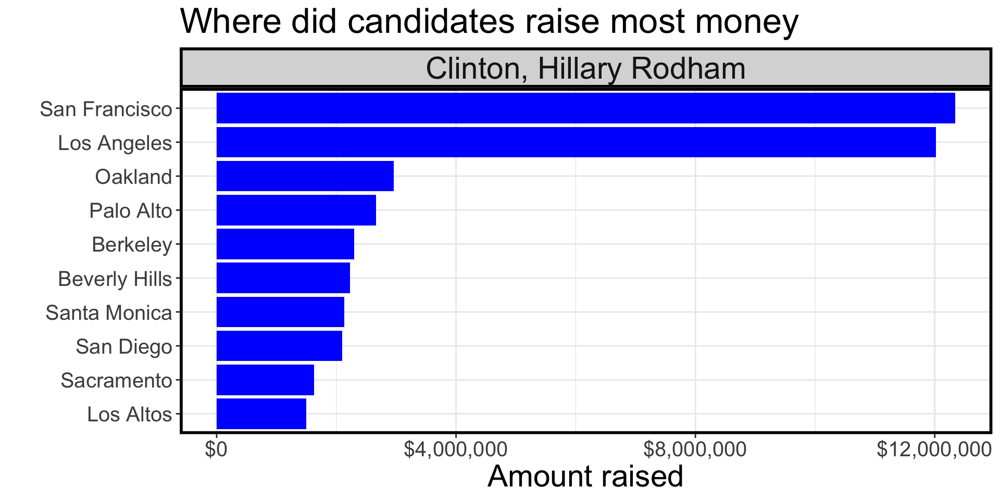
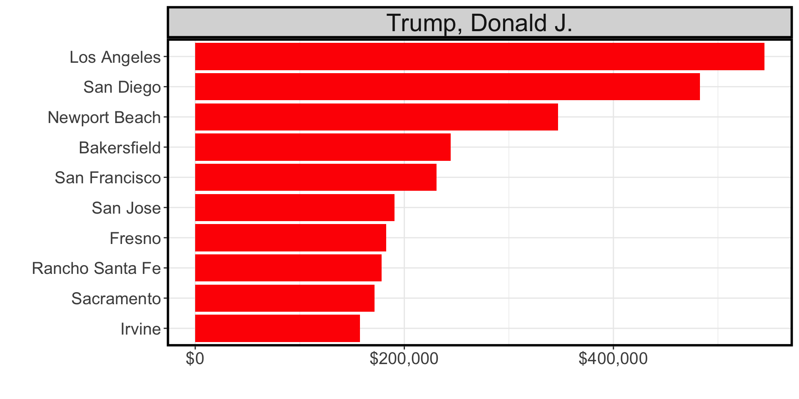
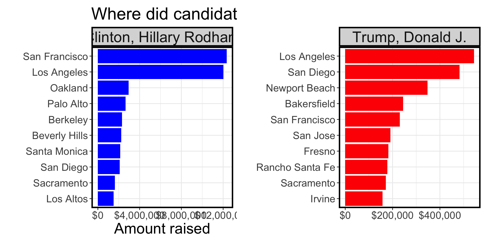
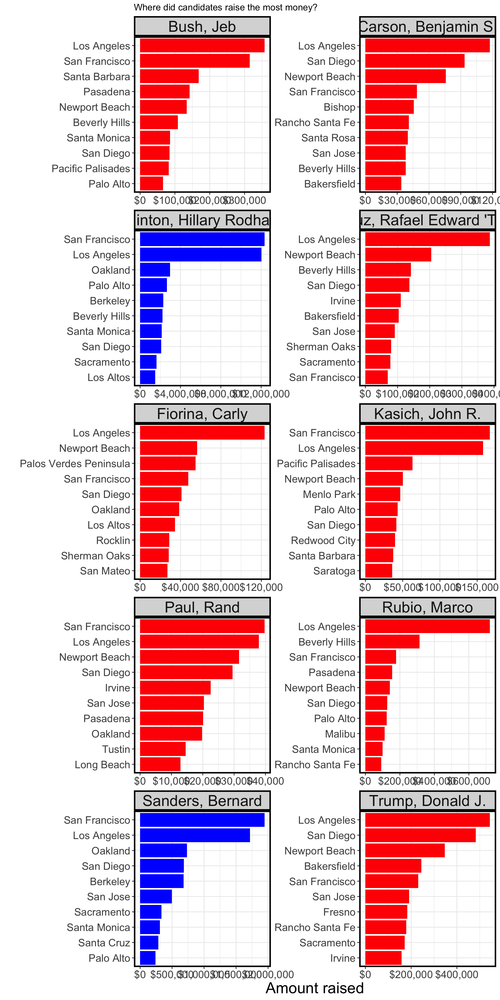

To get plot that shows the top ten cities in highest amounts raised in political contributions in California during the 2016 US Presidential election. We must join two dataframes; the one you have with all contributions, and data that can translate zipcodes to cities.
The easiest way would be to create two plots and then place one next to each other. For this, we will need the patchwork package.
https://cran.r-project.org/web/packages/patchwork/index.html
# Make sure you use vroom() as it is significantly faster than read.csv()
CA_contributors_2016 <- read_csv("CA_contributors_2016.csv")
#CA_contributors_2016 <- vroom::vroom(here::here("data","CA_contributors_2016.csv"))
glimpse(CA_contributors_2016)## Rows: 1,292,843
## Columns: 4
## $ cand_nm <chr> "Clinton, Hillary Rodham", "Clinton, Hillary Rodham…
## $ contb_receipt_amt <dbl> 50.0, 200.0, 5.0, 48.3, 40.0, 244.3, 35.0, 100.0, 2…
## $ zip <dbl> 94939, 93428, 92337, 95334, 93011, 95826, 90278, 90…
## $ contb_date <date> 2016-04-26, 2016-04-20, 2016-04-02, 2016-11-21, 20…zip_code <- read_csv("zip_code_database.csv")
#zip_code <- vroom::vroom(here::here("data","zip_code_database.csv"))
glimpse(zip_code)## Rows: 42,522
## Columns: 16
## $ zip <chr> "00501", "00544", "00601", "00602", "00603", "00…
## $ type <chr> "UNIQUE", "UNIQUE", "STANDARD", "STANDARD", "STA…
## $ primary_city <chr> "Holtsville", "Holtsville", "Adjuntas", "Aguada"…
## $ acceptable_cities <chr> NA, NA, NA, NA, "Ramey", "Ramey", NA, NA, NA, NA…
## $ unacceptable_cities <chr> "I R S Service Center", "Irs Service Center", "C…
## $ state <chr> "NY", "NY", "PR", "PR", "PR", "PR", "PR", "PR", …
## $ county <chr> "Suffolk County", "Suffolk County", "Adjuntas", …
## $ timezone <chr> "America/New_York", "America/New_York", "America…
## $ area_codes <dbl> 631, 631, 787939, 787, 787, NA, NA, 787939, 787,…
## $ latitude <dbl> 40.8, 40.8, 18.2, 18.4, 18.4, 18.4, 18.4, 18.2, …
## $ longitude <dbl> -73.0, -73.0, -66.7, -67.2, -67.2, -67.2, -67.2,…
## $ world_region <lgl> NA, NA, NA, NA, NA, NA, NA, NA, NA, NA, NA, NA, …
## $ country <chr> "US", "US", "US", "US", "US", "US", "US", "US", …
## $ decommissioned <dbl> 0, 0, 0, 0, 0, 0, 0, 0, 0, 0, 0, 0, 0, 0, 0, 0, …
## $ estimated_population <dbl> 384, 0, 0, 0, 0, 0, 0, 0, 0, 0, 0, 0, 0, 0, 0, 0…
## $ notes <chr> NA, NA, NA, NA, NA, NA, NA, NA, NA, "no NWS data…#when we join the data together, we need to convert them into the same string type#
CA_contributors_2016$zip <- as.character(CA_contributors_2016$zip)
total <- merge(CA_contributors_2016,zip_code, by = 'zip')
glimpse(total)## Rows: 1,292,843
## Columns: 19
## $ zip <chr> "90001", "90001", "90001", "90001", "90001", "90…
## $ cand_nm <chr> "Trump, Donald J.", "Clinton, Hillary Rodham", "…
## $ contb_receipt_amt <dbl> 4.00, 38.00, 50.00, 150.00, 10.00, -4.92, 25.00,…
## $ contb_date <date> 2016-07-12, 2016-08-31, 2016-11-03, 2016-10-04,…
## $ type <chr> "STANDARD", "STANDARD", "STANDARD", "STANDARD", …
## $ primary_city <chr> "Los Angeles", "Los Angeles", "Los Angeles", "Lo…
## $ acceptable_cities <chr> "Firestone Park, Firestone Pk", "Firestone Park,…
## $ unacceptable_cities <chr> NA, NA, NA, NA, NA, NA, NA, NA, NA, NA, NA, NA, …
## $ state <chr> "CA", "CA", "CA", "CA", "CA", "CA", "CA", "CA", …
## $ county <chr> "Los Angeles County", "Los Angeles County", "Los…
## $ timezone <chr> "America/Los_Angeles", "America/Los_Angeles", "A…
## $ area_codes <dbl> 2.13e+11, 2.13e+11, 2.13e+11, 2.13e+11, 2.13e+11…
## $ latitude <dbl> 34, 34, 34, 34, 34, 34, 34, 34, 34, 34, 34, 34, …
## $ longitude <dbl> -118, -118, -118, -118, -118, -118, -118, -118, …
## $ world_region <lgl> NA, NA, NA, NA, NA, NA, NA, NA, NA, NA, NA, NA, …
## $ country <chr> "US", "US", "US", "US", "US", "US", "US", "US", …
## $ decommissioned <dbl> 0, 0, 0, 0, 0, 0, 0, 0, 0, 0, 0, 0, 0, 0, 0, 0, …
## $ estimated_population <dbl> 36200, 36200, 36200, 36200, 36200, 36200, 36200,…
## $ notes <chr> NA, NA, NA, NA, NA, NA, NA, NA, NA, NA, NA, NA, …Total_contb <-total %>%
group_by(cand_nm) %>%
summarise(total_amt = sum(contb_receipt_amt)) %>%
arrange(desc(total_amt))Clinton_plot <- ggplot(filter(total,cand_nm=="Clinton, Hillary Rodham" & state == "CA") %>%
group_by(primary_city) %>%
summarise(total_amt_county = sum(contb_receipt_amt)) %>%
arrange(desc(total_amt_county)) %>%
slice_max(total_amt_county,n=10) %>%
mutate(name = "Clinton, Hillary Rodham"),aes(
x=total_amt_county,
y=reorder(primary_city,total_amt_county))) +
geom_col(fill="blue") +
theme_bw() +
ylab(" ") +
xlab("Amount raised") +
ggtitle("Where did candidates raise most money") +
scale_x_continuous(labels = scales::dollar_format()) +
facet_wrap(vars(name)) +
theme(
plot.title = element_text(size = 25),
axis.title = element_text(size = 22),
axis.text = element_text(size = 15),
strip.text = element_text(size=22),
panel.border = element_rect(colour = "black", fill=NA, size=2),
strip.background = element_rect(color = "black", size = 2)) +
NULL
Clinton_plot
Trump_data <- filter(total,cand_nm =="Trump, Donald J." & state == "CA") %>%
group_by(primary_city) %>%
summarise(total_amt_county = sum(contb_receipt_amt)) %>%
arrange(desc(total_amt_county)) %>%
slice_max(total_amt_county,n=10) %>%
mutate(name = "Trump, Donald J.")
glimpse(Trump_data)## Rows: 10
## Columns: 3
## $ primary_city <chr> "Los Angeles", "San Diego", "Newport Beach", "Bakers…
## $ total_amt_county <dbl> 544464, 482885, 347206, 244419, 230712, 190652, 1826…
## $ name <chr> "Trump, Donald J.", "Trump, Donald J.", "Trump, Dona…Trump_plot <- ggplot(data = Trump_data,aes(
x = total_amt_county,
y = reorder(primary_city,total_amt_county))) +
geom_col(fill= "red") +
theme_bw() +
ylab(" ") +
xlab("") +
scale_x_continuous(labels = scales::dollar_format()) +
facet_wrap(vars(name)) +
theme(
plot.title = element_text(size = 25),
axis.title = element_text(size = 22),
axis.text = element_text(size = 15),
strip.text = element_text(size=22),
panel.border = element_rect(colour = "black", fill=NA, size=2),
strip.background = element_rect(color = "black", size = 2)) +
NULL
Trump_plot
library(patchwork)
combined_plot <- Clinton_plot + Trump_plot
plot_annotation(title = "Where did the candidates raise most money?") +
theme_bw() +
NULL## integer(0)combined_plot
library(tidytext)
library(scales)
CA_contributors_top10 <- CA_contributors_2016 %>%
group_by(cand_nm) %>%
summarise(total_amount = sum(contb_receipt_amt)) %>%
arrange(desc(total_amount)) %>%
head(10)
top10_contributor <- CA_contributors_top10$cand_nm
CA_contributors_top10_cleaned <- CA_contributors_2016 %>%
filter(cand_nm %in% top10_contributor) %>%
select(cand_nm, contb_receipt_amt, zip)
joined_data_top10 <- left_join(CA_contributors_top10_cleaned,
zip_code,
by = 'zip')
top10_data <- joined_data_top10 %>%
group_by(cand_nm) %>%
count(primary_city, wt = contb_receipt_amt, sort = TRUE)
top10_data %>%
group_by(cand_nm) %>%
top_n(10) %>%
ungroup %>%
mutate(cand_nm = factor(cand_nm),
primary_city = reorder_within(primary_city, n, cand_nm)) %>%
ggplot(aes(x = primary_city, y = n, fill = cand_nm)) +
geom_col(show.legend = FALSE) +
scale_fill_manual(values = c("Bush, Jeb" = "red",
"Carson, Benjamin S." ="red",
"Clinton, Hillary Rodham" = "blue",
"Cruz, Rafael Edward 'Ted'" ="red",
"Fiorina, Carly" ="red",
"Kasich, John R." ="red",
"Paul, Rand" ="red",
"Rubio, Marco" ="red",
"Sanders, Bernard" = "blue",
"Trump, Donald J." = "red")) +
facet_wrap(~cand_nm, scales = 'free', ncol = 2) +
scale_x_reordered() +
scale_y_continuous(labels = label_dollar()) +
theme_bw() +
labs(y = 'Amount raised',
x = '',
title = 'Where did candidates raise the most money?') +
coord_flip() +
theme(
axis.title = element_text(size = 22),
axis.text = element_text(size = 15),
strip.text = element_text(size=22),
panel.border = element_rect(colour = "black", fill=NA, size=2),
strip.background = element_rect(color = "black", size = 2)) 